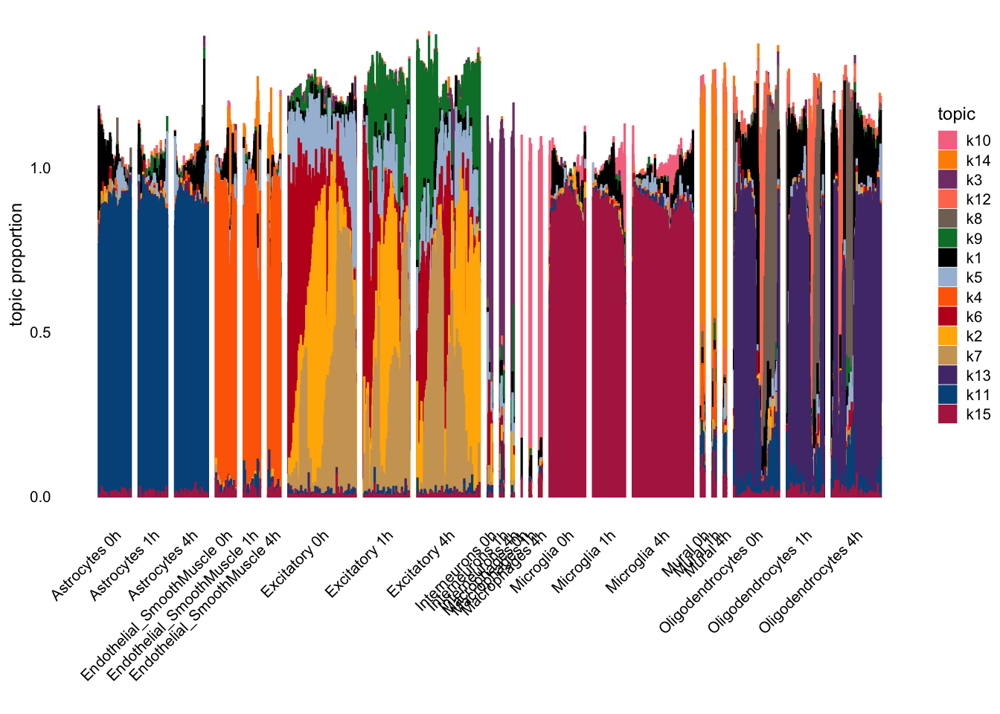
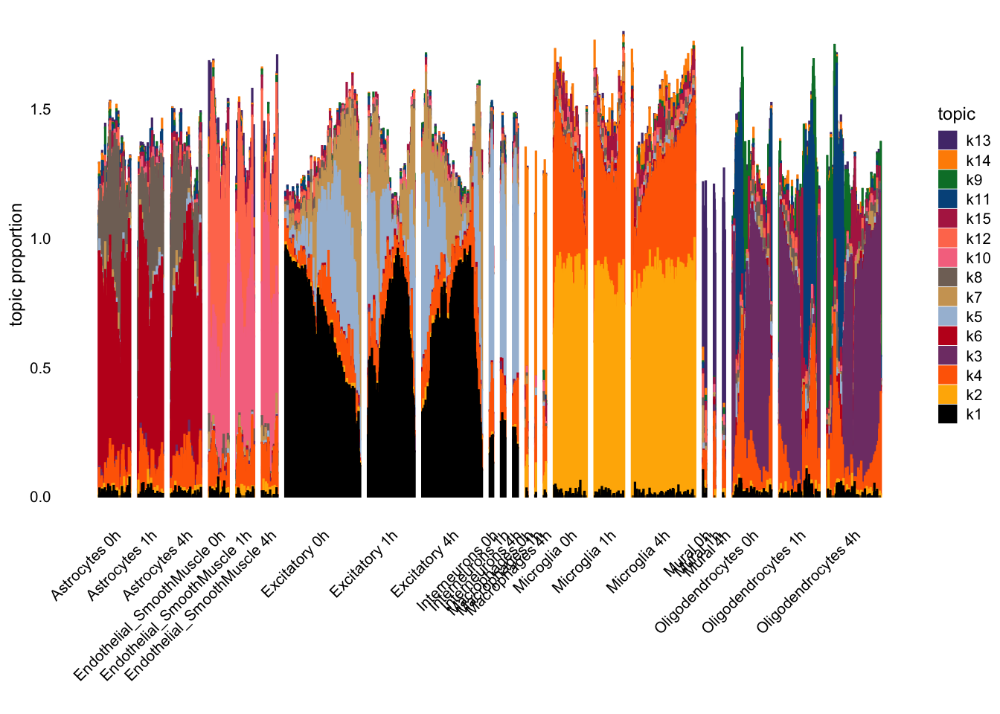
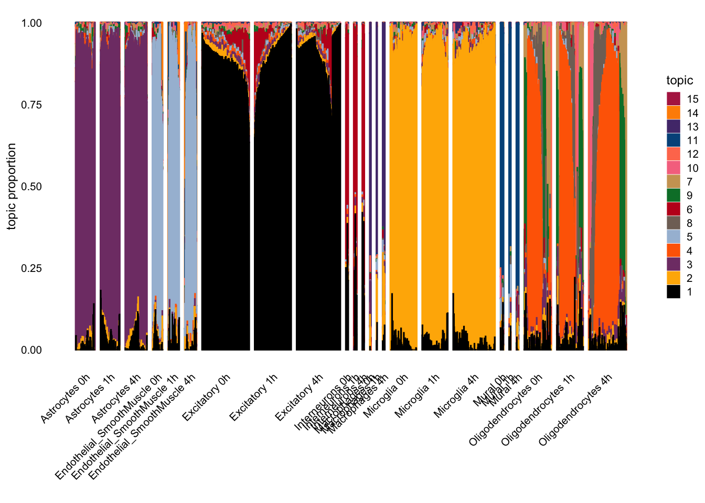

Last updated: 2024-10-04
Checks: 6 1
Knit directory: log1p_experiments/
This reproducible R Markdown analysis was created with workflowr (version 1.7.1). The Checks tab describes the reproducibility checks that were applied when the results were created. The Past versions tab lists the development history.
The R Markdown is untracked by Git. To know which version of the R
Markdown file created these results, you’ll want to first commit it to
the Git repo. If you’re still working on the analysis, you can ignore
this warning. When you’re finished, you can run
wflow_publish to commit the R Markdown file and build the
HTML.
Great job! The global environment was empty. Objects defined in the global environment can affect the analysis in your R Markdown file in unknown ways. For reproduciblity it’s best to always run the code in an empty environment.
The command set.seed(20240402) was run prior to running
the code in the R Markdown file. Setting a seed ensures that any results
that rely on randomness, e.g. subsampling or permutations, are
reproducible.
Great job! Recording the operating system, R version, and package versions is critical for reproducibility.
Nice! There were no cached chunks for this analysis, so you can be confident that you successfully produced the results during this run.
Great job! Using relative paths to the files within your workflowr project makes it easier to run your code on other machines.
Great! You are using Git for version control. Tracking code development and connecting the code version to the results is critical for reproducibility.
The results in this page were generated with repository version 7419934. See the Past versions tab to see a history of the changes made to the R Markdown and HTML files.
Note that you need to be careful to ensure that all relevant files for
the analysis have been committed to Git prior to generating the results
(you can use wflow_publish or
wflow_git_commit). workflowr only checks the R Markdown
file, but you know if there are other scripts or data files that it
depends on. Below is the status of the Git repository when the results
were generated:
Ignored files:
Ignored: .Rhistory
Untracked files:
Untracked: analysis/cnmf_comparison.Rmd
Untracked: analysis/mouse_brain_stim.Rmd
Note that any generated files, e.g. HTML, png, CSS, etc., are not included in this status report because it is ok for generated content to have uncommitted changes.
There are no past versions. Publish this analysis with
wflow_publish() to start tracking its development.
Here, I analyzed the dataset from “Single-cell analysis of experience-dependent transcriptomic states in the mouse visual cortex” by Hrvatin et al. Here, brain cells in mice were sequenced after prolonged darkness (0h), exposure to light for one hour (1h), and exposure to light for four hours (4h).
library(dplyr)
library(Matrix)
library(fastTopics)
load("~/Downloads/mouse_brain_stim.Rdata")
cells <- cells %>% dplyr::filter(!is.na(maintype))
counts <- counts[rownames(counts) %in% cells$`...1`, ]
counts <- counts[, Matrix::colSums(counts) > 0]
counts <- counts[Matrix::rowSums(counts) > 0, ]n <- nrow(counts)
p <- ncol(counts)
K <- 15
rs <- Matrix::rowSums(counts)
s <- rs / mean(rs)
set.seed(1)
log1p_k1 <- passPCA::fit_factor_model_log1p_quad_approx_sparse(
Y = counts,
K = 1,
maxiter = 10,
approx_range = c(0, 1.25),
s = s
)
init_LL <- log1p_k1$U %>%
cbind(
matrix(
data = rexp(
n = n * (K - 1), rate = 15
),
nrow = n,
ncol = K - 1
)
)
init_FF <- log1p_k1$V %>%
cbind(
matrix(
data = rexp(
n = p * (K - 1), rate = 15
),
nrow = p,
ncol = K - 1
)
)
set.seed(1)
log1p_k15 <- passPCA::fit_factor_model_log1p_quad_approx_sparse(
Y = counts,
K = 15,
maxiter = 100,
approx_range = c(0, 1.25),
s = s,
init_U = init_LL,
init_V = init_FF
)normalize_bars <- function(LL) {
max_col <- apply(LL, 2, max)
sweep(LL, 2, max_col, FUN = "/")
}log1p_k15 <- readr::read_rds(
"~/Documents/data/passPCA/experiment_results/mouse_brain_k15.rds"
)LL <- normalize_bars(log1p_k15$U)cell_stim <- paste(cells$maintype, cells$stim)
sp <- structure_plot(LL, grouping = cell_stim, gap = 25)
rownames(log1p_k15$V) <- colnames(counts)sp
library(clusterProfiler)
library(fgsea)
library(AnnotationDbi)
library(org.Mm.eg.db)
get_go_terms <- function(V) {
K <- ncol(V)
genes_vec <- c()
go_terms_vec <- c()
for (k in 1:K) {
driving_genes <- names(sort(V[,k], decreasing = TRUE))[1:20]
go_result <- enrichGO(gene = driving_genes,
OrgDb = org.Mm.eg.db,
keyType = "SYMBOL",
ont = "BP",
pAdjustMethod = "bonferroni",
pvalueCutoff = 0.05,
qvalueCutoff = 0.1)@result
go_result <- go_result %>%
dplyr::filter(p.adjust < .01)
go_terms <- go_result$Description
genes_vec <- c(genes_vec, paste(driving_genes, collapse = ", "))
go_terms_vec <- c(go_terms_vec, paste(go_terms, collapse = ", "))
}
go_df <- data.frame(
driving_genes = genes_vec,
go_terms = go_terms_vec,
factor = 1:K
)
return(go_df)
}gdf <- get_go_terms(log1p_k15$V)
knitr::kable(gdf)| driving_genes | go_terms | factor |
|---|---|---|
| Mbp, Fth1, Tpt1, Rps29, Bcas1, Gm20594, Rps23, Mobp, Kif5b, Rps3a1, Eef1a1, Rps3, Rps24, Rps27a, Kif5a, Rps21, Rpl26, Plekhb1, Rpl23, Gas5 | cytoplasmic translation, translation at presynapse, translation at synapse, translation at postsynapse, ribosomal small subunit biogenesis, ribosome biogenesis, regulation of intrinsic apoptotic signaling pathway in response to DNA damage, ribonucleoprotein complex biogenesis, axo-dendritic protein transport, positive regulation of intrinsic apoptotic signaling pathway in response to DNA damage, dense core granule cytoskeletal transport | 1 |
| Snap25, Syt1, Ndrg4, Nrgn, Stmn1, Calm2, Mef2c, Ppia, App, Gpm6a, Ppp3ca, Meg3, Rtn1, Calm1, Itm2b, Camk2n1, Gnas, Atp1b1, Stxbp1, Rtn3 | response to calcium ion, positive regulation of secretion, detection of calcium ion, positive regulation of dephosphorylation, response to metal ion, cognition, positive regulation of secretion by cell, amyloid precursor protein metabolic process, organelle localization by membrane tethering, regulation of monoatomic ion transmembrane transporter activity, membrane docking, regulation of transmembrane transporter activity, regulation of transporter activity, positive regulation of calcium ion transmembrane transport, positive regulation of monoatomic ion transport, calcium ion-regulated exocytosis of neurotransmitter, positive regulation of phosphatase activity, regulation of muscle system process, regulation of dephosphorylation, synaptic vesicle fusion to presynaptic active zone membrane, positive regulation of calcium ion transmembrane transporter activity, vesicle fusion to plasma membrane, synaptic vesicle membrane organization, dephosphorylation, positive regulation of calcium ion transport, regulation of monoatomic cation transmembrane transport, learning or memory, positive regulation of synaptic transmission, positive regulation of cation transmembrane transport, positive regulation of protein dephosphorylation, regulation of monoatomic ion transmembrane transport, regulation of amyloid precursor protein catabolic process, positive regulation of monoatomic ion transmembrane transport, neurotransmitter secretion, signal release from synapse, regulation of synaptic plasticity, negative regulation of calcium ion transmembrane transport, regulation of calcium ion transmembrane transport | 2 |
| Sst, Meg3, Atp1b1, Syt1, Ndrg4, Npy, Snap25, Gad1, Slc6a1, Gnas, Serpini1, Tspyl4, Nap1l5, Atp6v0c, Gad2, Rtn3, Ywhab, Snhg11, Cplx1, Sparcl1 | neurotransmitter transport, synaptic vesicle exocytosis, synaptic vesicle fusion to presynaptic active zone membrane, vesicle fusion to plasma membrane, synaptic vesicle membrane organization, neurotransmitter secretion, signal release from synapse, synaptic vesicle cycle | 3 |
| Tmsb4x, Flt1, Epas1, Spock2, Itm2a, Slc6a6, Bsg, Sparc, Actg1, Cldn5, Ly6a, Slco1a4, Slc2a1, B2m, Pltp, Sptbn1, Actb, Cxcl12, Tpt1, Ptprb | 4 | |
| Meg3, Nrgn, Snhg11, Ppp3ca, Camk2n1, H2-Q4, Gm37065, Rtn1, Nkain3, Lin54, Baiap2, Bicd1, Calm1, Klf9, Elavl3, Atp1a1, Syt11, Ttc3, Basp1, Cmip | 5 | |
| Nrgn, Camk2n1, Snap25, Ppp3ca, Calm2, Meg3, Gpm6a, Cck, Enc1, Itm2c, Ndrg4, Syt1, Calm1, Tmsb4x, Ppp3r1, Fkbp1a, Ywhab, App, Uchl1, Lmo4 | response to calcium ion, detection of calcium ion, negative regulation of calcium ion transmembrane transport, regulation of monoatomic cation transmembrane transport, regulation of monoatomic ion transmembrane transport, regulation of calcium ion transmembrane transport, negative regulation of calcium ion transport, calcium ion transmembrane import into cytosol, regulation of ryanodine-sensitive calcium-release channel activity, negative regulation of cation transmembrane transport, protein dephosphorylation, positive regulation of calcium ion transmembrane transport, negative regulation of monoatomic ion transmembrane transport, regulation of calcium-mediated signaling, regulation of cation channel activity, regulation of calcium ion transport, associative learning, response to metal ion, negative regulation of transmembrane transport, dephosphorylation, positive regulation of calcium ion transport, negative regulation of monoatomic ion transport, postsynaptic modulation of chemical synaptic transmission, learning or memory, calcium ion transmembrane transport, positive regulation of cation transmembrane transport, maintenance of location, cognition, memory, positive regulation of monoatomic ion transmembrane transport, learning, positive regulation of calcium-mediated signaling, regulation of metal ion transport | 6 |
| Pcp4, Snap25, Nrgn, Meg3, Calm2, Syt1, Ncald, 3110035E14Rik, Ndrg4, Basp1, Stmn1, Gnas, Rtn1, Ywhab, Gpm6a, Uchl1, Atp6v0c, Ppia, Atp1b1, Cpe | positive regulation of secretion by cell, positive regulation of secretion | 7 |
| Pdgfra, Cspg5, Gpr17, Ptprz1, Olig1, Tuba1a, Sulf2, Serpine2, Cd9, Marcks, Bcan, Sdc3, Vcan, Sirt2, S100a16, Fyn, Tnr, Tubb2b, Mpzl1, Actb | gliogenesis, glial cell differentiation, regulation of neurogenesis, negative regulation of platelet activation, negative regulation of response to wounding, positive regulation of neuron projection development, regulation of neural precursor cell proliferation, positive regulation of neurogenesis, regulation of platelet activation, negative regulation of blood coagulation, negative regulation of hemostasis, positive regulation of nervous system development, negative regulation of coagulation, regulation of response to wounding, forebrain development, myelination, ensheathment of neurons, axon ensheathment, platelet aggregation, neuron migration, positive regulation of cell projection organization, negative regulation of response to external stimulus, regulation of blood coagulation | 8 |
| Scg2, Homer1, Egr1, Nefl, Nefm, Bdnf, Arpp21, Nrgn, Cx3cl1, Meg3, Nr4a2, Snap25, Rab6a, Arc, Nrn1, Nr4a1, Vgf, Ppp3ca, Atp1b1, Camk2n1 | long-term memory, learning or memory, memory, cognition, muscle organ development, regulation of neuronal synaptic plasticity, regulation of synaptic plasticity, skeletal muscle tissue development, skeletal muscle organ development, positive regulation of monoatomic ion transport, regulation of neuron apoptotic process, positive regulation of calcium ion transport, postsynaptic modulation of chemical synaptic transmission, regulation of monoatomic ion transmembrane transport, positive regulation of monoatomic ion transmembrane transport, neuron apoptotic process, response to peptide hormone | 9 |
| Apoe, Ctsb, Tmsb4x, Fth1, C1qc, Lyz2, Mrc1, Itm2b, Dab2, C1qa, Csf1r, B2m, Tpt1, Rps29, Ctsc, Serinc3, C1qb, Maf, Eef1a1, Actb | synapse pruning, positive regulation by host of viral process, cell junction disassembly, complement activation, classical pathway, modulation by host of viral process, microglial cell activation, leukocyte activation involved in inflammatory response, humoral immune response mediated by circulating immunoglobulin, glial cell activation, regulation of protein binding | 10 |
| Slc1a2, Glul, Atp1a2, Plpp3, Aldoc, Sparcl1, Apoe, Slc1a3, Clu, Cst3, S1pr1, Tspan7, Mt1, Cpe, Atp1b2, Ndrg2, Gstm1, Gpm6a, Gja1, Gpr37l1 | intracellular sodium ion homeostasis, sodium ion homeostasis, behavioral fear response, behavioral defense response | 11 |
| Plp1, Cldn11, Mbp, Nfasc, Marcks, Ttll1, Cnp, Sirt2, Mag, Mobp, Cd81, Marcksl1, Secisbp2l, Ubl3, Scd2, Aplp1, Tspan2, Tuba1a, Syt11, Qk | ensheathment of neurons, axon ensheathment, myelination, oligodendrocyte differentiation, glial cell differentiation, gliogenesis, glial cell development | 12 |
| Plp1, Mal, Ttll1, Cldn11, Ptgds, Scd2, Fth1, Cnp, Aplp1, Mog, Car2, Trf, Mag, Mobp, Syt11, Enpp2, Glul, App, Mbp, Tspan2 | ensheathment of neurons, axon ensheathment, gliogenesis, oligodendrocyte differentiation, glial cell differentiation, myelination, glial cell development, astrocyte differentiation, central nervous system myelination, axon ensheathment in central nervous system, astrocyte development, oligodendrocyte development | 13 |
| Hbb-bs, Hba-a2, Hbb-bt, Rgs5, Atp1a2, Vtn, Hba-a1, Cald1, Abcc9, Mgp, Notch3, Ptn, Pdgfrb, Epas1, Igfbp7, Myl9, Zic1, Rgs4, Itm2b, Sparcl1 | regulation of heart contraction | 14 |
| Cst3, Sparc, Tmsb4x, Csf1r, C1qc, C1qa, Itm2b, Serinc3, Ctss, Hexb, B2m, Eef1a1, C1qb, P2ry12, Cx3cr1, Marcks, Ctsb, Actb, Laptm5, Lgmn | synapse pruning, cell junction disassembly, antigen processing and presentation of exogenous peptide antigen via MHC class II, antigen processing and presentation of peptide antigen via MHC class II, cellular component disassembly, antigen processing and presentation of peptide or polysaccharide antigen via MHC class II, positive regulation of macrophage migration, collagen catabolic process, complement activation, classical pathway, positive regulation of chemotaxis, regulation of macrophage migration, microglial cell activation, gliogenesis, positive regulation of leukocyte migration, antigen processing and presentation of exogenous peptide antigen, leukocyte activation involved in inflammatory response, humoral immune response mediated by circulating immunoglobulin, glial cell activation, antigen processing and presentation of exogenous antigen | 15 |
nmf_fit <- readr::read_rds(
"~/Documents/data/passPCA/experiment_results/rcppML_nmf_k15.rds"
)
nmf_LL <- nmf_fit$w %*% diag(x = nmf_fit$d)
nmf_LL <- normalize_bars(nmf_LL)
nmf_FF <- t(diag(x = nmf_fit$d) %*% nmf_fit$h)
rownames(nmf_FF) <- colnames(counts)
sp <- structure_plot(nmf_LL, grouping = cell_stim, gap = 25)sp
gdf <- get_go_terms(nmf_FF)
knitr::kable(gdf)| driving_genes | go_terms | factor |
|---|---|---|
| Nrgn, Snap25, Meg3, Camk2n1, Ppp3ca, Calm2, Syt1, Calm1, Rtn1, Ndrg4, App, Gpm6a, Mef2c, Atp1b1, Olfm1, Stmn1, Rab6a, Ywhab, Atp6v0c, Lmo4 | response to calcium ion, detection of calcium ion, response to metal ion, negative regulation of G protein-coupled receptor signaling pathway, regulation of monoatomic ion transmembrane transporter activity, regulation of transmembrane transporter activity, regulation of transporter activity, positive regulation of calcium ion transmembrane transport, positive regulation of phosphatase activity, regulation of muscle system process, regulation of dephosphorylation, positive regulation of calcium ion transmembrane transporter activity, dephosphorylation, positive regulation of calcium ion transport, regulation of monoatomic cation transmembrane transport, learning or memory, regulation of G protein-coupled receptor signaling pathway, positive regulation of cation transmembrane transport, regulation of monoatomic ion transmembrane transport, cognition, positive regulation of monoatomic ion transmembrane transport, negative regulation of calcium ion transmembrane transport, regulation of calcium ion transmembrane transport, positive regulation of dephosphorylation | 1 |
| Cst3, Sparc, Csf1r, C1qc, C1qa, Itm2b, Hexb, Ctss, Serinc3, B2m, Tmsb4x, C1qb, P2ry12, Cx3cr1, Marcks, Lgmn, Laptm5, Ctsd, Psap, Fcrls | synapse pruning, cell junction disassembly, antigen processing and presentation of exogenous peptide antigen via MHC class II, cellular component disassembly, antigen processing and presentation of peptide antigen via MHC class II, antigen processing and presentation of peptide or polysaccharide antigen via MHC class II, positive regulation of macrophage migration, antigen processing and presentation, complement activation, classical pathway, positive regulation of chemotaxis, regulation of macrophage migration, microglial cell activation, gliogenesis, positive regulation of leukocyte migration, antigen processing and presentation of exogenous peptide antigen, leukocyte activation involved in inflammatory response, positive regulation of peptidase activity, regulation of peptidase activity, humoral immune response mediated by circulating immunoglobulin, glial cell activation, antigen processing and presentation of exogenous antigen | 2 |
| Plp1, Cldn11, Ttll1, Mal, Fth1, Scd2, Cnp, Aplp1, Ptgds, Mbp, Mobp, Trf, Mog, Syt11, Car2, App, Mag, Enpp2, Csrp1, Glul | ensheathment of neurons, axon ensheathment, gliogenesis, oligodendrocyte differentiation, glial cell differentiation, myelination, central nervous system myelination, axon ensheathment in central nervous system, glial cell development, oligodendrocyte development | 3 |
| Hspa5, Ptma, Ppia, Actg1, Arf1, Tuba1b, Calr, Tmsb4x, Hsp90ab1, Eef1a1, Hnrnpk, Srsf2, Cd9, Ybx1, Hspa8, Chchd2, Mrfap1, Eif4g2, Epb41l2, H3f3a | protein folding, cellular response to interleukin-4, response to interleukin-4, positive regulation of dendritic spine development | 4 |
| Meg3, Syt1, Atp1b1, Ndrg4, Snap25, Gnas, Rtn3, Stmn1, Atp6v0c, Pcp4, Gpm6a, Tspyl4, Calm2, Uchl1, Ywhab, Ncald, Snrpn, Serpini1, Rtn1, Ywhag | 5 | |
| Plpp3, Atp1a2, Slc1a2, Slc1a3, Apoe, Sparcl1, S1pr1, Clu, Gja1, Glul, Gpm6a, Gpr37l1, Cst3, Atp1b2, Tspan7, Aldoc, Cpe, Htra1, Bcan, Prnp | import across plasma membrane, negative regulation of amyloid-beta formation, negative regulation of amyloid precursor protein catabolic process, intracellular sodium ion homeostasis, regulation of amyloid-beta formation, sodium ion homeostasis, regulation of amyloid precursor protein catabolic process, amyloid-beta formation, gliogenesis, amyloid-beta metabolic process, behavioral fear response, potassium ion transmembrane transport, behavioral defense response, amyloid precursor protein catabolic process | 6 |
| Nrgn, Meg3, Baiap2, Rtn1, Ppp3ca, Basp1, Klf9, Calm1, Snhg11, Hsp90aa1, Ywhab, Pcp4, Ina, 3110035E14Rik, Cmip, Gria2, Syt11, Rab6a, Elavl3, Rnf112 | postsynaptic modulation of chemical synaptic transmission | 7 |
| Glul, Aldoc, Mt1, Ndrg2, Gstm1, Fam107a, Mt2, Prdx6, Mt3, Ckb, Csrp1, Gapdh, Fth1, Ppia, Slc1a2, Tubb2b, Cox8a, Ywhae, Tsc22d4, Ddah1 | stress response to metal ion, detoxification of inorganic compound, detoxification, cellular response to zinc ion, cellular response to copper ion, intracellular zinc ion homeostasis, cellular response to cadmium ion, response to copper ion, nitric oxide mediated signal transduction, response to toxic substance, response to zinc ion, response to cadmium ion | 8 |
| Plp1, Nfasc, Cldn11, Mbp, Sirt2, Cnp, Ttll1, Marcks, Mag, Cd81, Marcksl1, Mobp, Scd2, Aplp1, Secisbp2l, Ubl3, Syt11, Qk, Tuba1a, Ugt8a | ensheathment of neurons, axon ensheathment, myelination, myelin assembly, glial cell differentiation, oligodendrocyte differentiation, gliogenesis | 9 |
| Actg1, Epas1, Ly6a, Slc2a1, Slc6a6, Actb, Flt1, Clic4, Glul, Tmsb4x, B2m, Sparc, Ptma, Hspb1, Tm4sf1, Timp3, Sptbn1, Cxcl12, Tinagl1, Tsc22d1 | regulation of vasculature development, regulation of epithelial cell proliferation | 10 |
| Ptprz1, Cspg5, Pdgfra, Olig1, Marcks, Serpine2, Bcan, Sulf2, Gpr17, Sdc3, Gpm6b, Cntn1, S100a16, Syt11, Scd2, Vcan, Pllp, Tuba1a, Cacng4, Sparcl1 | glial cell differentiation, gliogenesis, oligodendrocyte differentiation, glial cell development, positive regulation of neurogenesis, cell-substrate adhesion, oligodendrocyte development, positive regulation of nervous system development, myelination, ensheathment of neurons, axon ensheathment | 11 |
| Itm2a, Spock2, Bsg, Cldn5, Slco1a4, Slc7a5, Sparcl1, Pltp, Rps29, Tmsb4x, Car4, Sparc, Flt1, Tpt1, Sptbn1, Slc16a1, Ly6e, Itm2b, Igf1r, Kdr | 12 | |
| Rgs5, Atp1a2, Vtn, Ptn, Cald1, Itm2b, Sparcl1, Pdgfrb, Abcc9, Laptm4a, Igfbp7, Notch3, Epas1, Sparc, Serinc3, Tmsb4x, Slc6a20a, Rgs4, Atp13a5, Zic1 | regulation of heart contraction, import across plasma membrane | 13 |
| Apoe, Ctsb, Tmsb4x, Fth1, C1qc, Itm2b, Lyz2, Mrc1, C1qa, Csf1r, Rps29, Serinc3, Dab2, B2m, Ctsc, Tpt1, C1qb, Maf, Cst3, Actb | synapse pruning, cell junction disassembly, complement activation, classical pathway, microglial cell activation, leukocyte activation involved in inflammatory response, humoral immune response mediated by circulating immunoglobulin, glial cell activation, regulation of protein binding | 14 |
| Mbp, Fth1, Tpt1, Rps29, Rps23, Gm20594, Mobp, Bcas1, Eef1a1, Rps3a1, Rps3, Rps24, Kif5b, Plp1, Rps27a, Rps21, Rpl26, Rpl23, Gas5, Rpl37 | cytoplasmic translation, translation at presynapse, translation at synapse, translation at postsynapse, ribosomal small subunit biogenesis, positive regulation of signal transduction by p53 class mediator, ribosome biogenesis, regulation of intrinsic apoptotic signaling pathway in response to DNA damage, ribonucleoprotein complex biogenesis, positive regulation of intrinsic apoptotic signaling pathway in response to DNA damage, regulation of signal transduction by p53 class mediator | 15 |
usage_df <- readr::read_csv(
"~/Documents/data/passPCA/mouse_brain_cnmf_usage.csv"
)
top_genes_df <- readr::read_csv(
"~/Documents/data/passPCA/mouse_brain_cnmf_top_usage.csv"
)
top_genes_df <- top_genes_df %>%
dplyr::select(-`...1`)
cNMF_LL <- usage_df %>%
dplyr::select(-bc) %>%
as.matrix()
sp <- structure_plot(cNMF_LL, grouping = cell_stim, gap = 25)sp
get_go_terms_cNMF <- function(sets_df) {
K <- ncol(sets_df)
genes_vec <- c()
go_terms_vec <- c()
for (k in 1:K) {
driving_genes <- (sets_df[[k]])[1:20]
go_result <- enrichGO(gene = driving_genes,
OrgDb = org.Mm.eg.db,
keyType = "SYMBOL",
ont = "BP",
pAdjustMethod = "bonferroni",
pvalueCutoff = 0.05,
qvalueCutoff = 0.1)@result
go_result <- go_result %>%
dplyr::filter(p.adjust < .01)
go_terms <- go_result$Description
genes_vec <- c(genes_vec, paste(driving_genes, collapse = ", "))
go_terms_vec <- c(go_terms_vec, paste(go_terms, collapse = ", "))
}
go_df <- data.frame(
driving_genes = genes_vec,
go_terms = go_terms_vec,
factor = 1:K
)
return(go_df)
}
gdf_cNMF <- get_go_terms_cNMF(top_genes_df)
knitr::kable(gdf_cNMF)| driving_genes | go_terms | factor |
|---|---|---|
| Nrgn, Snap25, Olfm1, Calm2, Rtn1, Calm1, Chn1, Ndrg4, Ppp3ca, Syt1, Cx3cl1, Sv2b, Ppp3r1, Stxbp1, Snca, Camk2b, Camk2a, Pgm2l1, Vsnl1, Uchl1 | positive regulation of calcium ion transport, positive regulation of calcium ion transmembrane transport, synaptic vesicle exocytosis, synaptic vesicle cycle, positive regulation of monoatomic ion transport, calcium ion transport, vesicle-mediated transport in synapse, regulation of calcium ion transport, positive regulation of cation transmembrane transport, positive regulation of monoatomic ion transmembrane transport, neurotransmitter secretion, signal release from synapse, regulation of calcium ion transmembrane transport, organelle localization by membrane tethering, membrane docking, calcium ion transmembrane import into cytosol, exocytosis, exocytic process, neurotransmitter transport, regulation of neurotransmitter secretion, regulation of metal ion transport, positive regulation of transmembrane transport, positive regulation of release of sequestered calcium ion into cytosol, regulated exocytosis, regulation of neurotransmitter transport, detection of calcium ion, negative regulation of calcium ion transmembrane transport, response to type II interferon, response to metal ion, regulation of monoatomic cation transmembrane transport, calcium ion transmembrane transport, positive regulation of synaptic transmission, vesicle docking, regulation of monoatomic ion transmembrane transport, negative regulation of calcium ion transport, regulation of synaptic plasticity, SNARE complex assembly, regulation of release of sequestered calcium ion into cytosol, positive regulation of secretion, regulation of exocytosis, negative regulation of cation transmembrane transport, positive regulation of neurotransmitter secretion, negative regulation of monoatomic ion transmembrane transport, calcium ion-regulated exocytosis of neurotransmitter, positive regulation of exocytosis, negative regulation of transport, synaptic vesicle priming, positive regulation of neurotransmitter transport, synaptic vesicle fusion to presynaptic active zone membrane, vesicle fusion to plasma membrane, cellular response to type II interferon, regulation of vesicle fusion, vesicle fusion, organelle membrane fusion, synaptic vesicle membrane organization, negative regulation of transmembrane transport, release of sequestered calcium ion into cytosol, negative regulation of sequestering of calcium ion, regulation of sequestering of calcium ion, intracellular calcium ion homeostasis, sequestering of calcium ion, negative regulation of monoatomic ion transport, postsynaptic modulation of chemical synaptic transmission, regulation of G protein-coupled receptor signaling pathway, response to calcium ion, calcium ion homeostasis, response to ischemia, membrane fusion, organelle fusion, positive regulation of secretion by cell, protein localization to cell periphery | 1 |
| Cst3, C1qc, Csf1r, Hexb, C1qa, Cx3cr1, Ctss, C1qb, Sparc, P2ry12, Laptm5, Lgmn, Ctsd, Fcrls, Selplg, Ly86, Serinc3, Rnase4, Gpr34, Itgam | synapse pruning, cell junction disassembly, cellular component disassembly, microglial cell activation, leukocyte activation involved in inflammatory response, glial cell activation, gliogenesis, leukocyte migration, neuroinflammatory response, myeloid leukocyte migration, macrophage activation, positive regulation of macrophage migration, complement activation, classical pathway, positive regulation of chemotaxis, regulation of macrophage migration, positive regulation of leukocyte migration, positive regulation of peptidase activity, leukocyte adhesion to vascular endothelial cell, regulation of peptidase activity, humoral immune response mediated by circulating immunoglobulin, macrophage differentiation, chemotaxis, taxis, complement activation, macrophage migration, regulation of cysteine-type endopeptidase activity | 2 |
| Aldoc, Plpp3, Slc1a3, Gja1, Slc1a2, Ndrg2, Clu, Gstm1, S1pr1, Glul, Mt1, Atp1b2, Sparcl1, Gpr37l1, Htra1, Prdx6, Scg3, Acsbg1, Pla2g7, Mt2 | 3 | |
| Trf, Mal, Aplp1, Mog, Scd2, Apod, Enpp2, Cryab, Car2, Plp1, Ermn, Ttll1, Sept4, Stmn4, Efnb3, Tmem88b, Csrp1, Cntn2, Gpr37, Ptgds | 4 | |
| Bsg, Cldn5, Flt1, Itm2a, Pltp, Abcb1a, Slco1a4, Spock2, Ptprb, Fn1, Esam, Slc2a1, Slc6a6, Ly6a, Sptbn1, Ahnak, Kdr, Egfl7, Adgrl4, Sgms1 | 5 | |
| Slc32a1, Gad2, Gad1, Gad1-ps, Sst, Npy, Cplx1, Serpini1, Nap1l5, Pnoc, Synpr, Elavl2, Rab3b, Kcnc1, Dlx1, Zcchc12, Rab3c, Cntnap2, Rpp25, Tspyl4 | regulation of exocytosis, neurotransmitter transport, synaptic vesicle cycle | 6 |
| Fyn, Tuba1a, Bmp4, Gpr17, Tmem108, Mpzl1, Chn2, Neu4, Tnr, Sirt2, Ust, Mycl, Lims2, Cd9, Susd4, Arsb, Gp1bb, Rnd2, Matn1, Brca1 | negative regulation of reactive oxygen species metabolic process, forebrain development | 7 |
| Ddr1, Ctps, Marcksl1, Tspan2, Mag, Igsf8, Onecut2, Kndc1, Ank3, Tmem141, Tmeff2, Sh3gl3, Fam214a, Mcam, Mobp, Ptprd, Sema6a, Plat, Hmgcs1, Cd81 | 8 | |
| Pdgfra, Cacng4, C1ql1, Matn4, Lhfpl3, Sdc3, Ptprz1, Cspg5, Olig1, Cdo1, Cntn1, Vcan, Rlbp1, Cspg4, Serpine2, Megf11, Plppr5, Emid1, Ccnd1, Sulf2 | gliogenesis, glial cell differentiation, positive regulation of peptidyl-tyrosine phosphorylation, gland development, glial cell migration, positive regulation of neuron projection development | 9 |
| Tmem2, Cnksr3, Nfasc, Tmem163, Rras2, Enpp6, Tcf7l2, Rnd2, Rnf122, Marcks, Gsto1, Sema5a, Idh1, Secisbp2l, Ubl3, Bace1, Steap2, Pik3r3, Reep5, Sema6a | 10 | |
| Vtn, Rgs5, Pdgfrb, Atp13a5, Cald1, Abcc9, Slc6a20a, Notch3, Zic1, Nbl1, Ndufa4l2, Art3, P2ry14, Sod3, Kcnj8, Myl9, Slc19a1, Higd1b, Enpep, Lamc1 | import across plasma membrane, glomerulus development | 11 |
| Mbp, Kif5a, Bcas1, Fth1, Kif5b, Plekhb1, Prr18, Gas5, Pkp4, Rapgef4, Tpt1, Lrrc17, Gm20594, Trp53inp2, Rps3a1, Trak2, Rpl37, Rps23, Rpl30, Rps3 | dendritic transport, cytoplasmic translation, vesicle transport along microtubule, anterograde axonal transport, vesicle cytoskeletal trafficking, axonal transport, axo-dendritic protein transport, axo-dendritic transport, receptor localization to synapse | 12 |
| Mrc1, Cbr2, Dab2, Lyz2, Pf4, F13a1, Cd36, Cybb, Ms4a7, Cd163, Clec4n, Clec10a, Wfdc17, Clec4a1, Stab1, Ctsc, Arhgap19, Apoe, Lilrb4a, Igf1 | wound healing, receptor-mediated endocytosis, positive regulation of steroid metabolic process, blood coagulation, negative regulation of MAPK cascade, coagulation, hemostasis | 13 |
| Tagln, Myh11, Acta2, Gkn3, Sema3g, Eln, Mgp, Col18a1, Tpm2, Crip1, Sncg, Pln, Ntn4, Egfl8, Timp3, Olfr558, Emp1, Vegfc, Tm4sf1, Bmx | extracellular matrix assembly | 14 |
| Prc1, Ube2c, Fam64a, Cdca3, Aspm, Racgap1, Ccna2, Ckap2, Top2a, Pbk, Ckap2l, Ect2, Spc25, Cdca8, Ccnb2, Kif11, Kif20a, Ccnb1, Troap, Plk1 | nuclear chromosome segregation, chromosome segregation, nuclear division, spindle organization, sister chromatid segregation, mitotic sister chromatid segregation, spindle assembly, mitotic spindle organization, mitotic nuclear division, microtubule cytoskeleton organization involved in mitosis, mitotic cytokinesis, chromosome separation, regulation of cell division, cytokinesis, regulation of cytokinesis, cytoskeleton-dependent cytokinesis, spindle elongation, attachment of spindle microtubules to kinetochore, regulation of mitotic sister chromatid separation, mitotic sister chromatid separation, regulation of attachment of spindle microtubules to kinetochore, mitotic spindle assembly, regulation of chromosome separation, regulation of mitotic metaphase/anaphase transition, regulation of metaphase/anaphase transition of cell cycle, metaphase/anaphase transition of mitotic cell cycle, metaphase/anaphase transition of cell cycle, metaphase chromosome alignment, negative regulation of chromosome organization, non-membrane-bounded organelle assembly, regulation of sister chromatid segregation, mitotic cell cycle phase transition, regulation of chromosome organization, establishment of chromosome localization, regulation of mitotic nuclear division, chromosome localization, regulation of chromosome segregation, mitotic spindle assembly checkpoint signaling, spindle assembly checkpoint signaling, spindle midzone assembly, negative regulation of sister chromatid segregation, negative regulation of mitotic sister chromatid segregation, negative regulation of mitotic metaphase/anaphase transition, mitotic spindle checkpoint signaling, negative regulation of mitotic sister chromatid separation, negative regulation of metaphase/anaphase transition of cell cycle, negative regulation of chromosome separation, regulation of nuclear division, spindle checkpoint signaling, negative regulation of chromosome segregation, regulation of mitotic sister chromatid segregation, negative regulation of mitotic nuclear division, regulation of cyclin-dependent protein serine/threonine kinase activity, female gamete generation, regulation of cyclin-dependent protein kinase activity, negative regulation of nuclear division, negative regulation of organelle organization, meiotic chromosome segregation, establishment of organelle localization, positive regulation of cell cycle process, regulation of mitotic cell cycle phase transition, cytokinetic process, mitotic cell cycle checkpoint signaling, cell cycle G2/M phase transition, positive regulation of cell cycle, female meiotic nuclear division, positive regulation of cytokinesis, negative regulation of mitotic cell cycle phase transition, cell cycle checkpoint signaling, regulation of cell cycle phase transition, meiotic nuclear division, meiotic cell cycle process, negative regulation of mitotic cell cycle | 15 |
sessionInfo()FALSE R version 4.4.0 (2024-04-24)
FALSE Platform: aarch64-apple-darwin20
FALSE Running under: macOS Ventura 13.5
FALSE
FALSE Matrix products: default
FALSE BLAS: /Library/Frameworks/R.framework/Versions/4.4-arm64/Resources/lib/libRblas.0.dylib
FALSE LAPACK: /Library/Frameworks/R.framework/Versions/4.4-arm64/Resources/lib/libRlapack.dylib; LAPACK version 3.12.0
FALSE
FALSE locale:
FALSE [1] en_US.UTF-8/en_US.UTF-8/en_US.UTF-8/C/en_US.UTF-8/en_US.UTF-8
FALSE
FALSE time zone: America/New_York
FALSE tzcode source: internal
FALSE
FALSE attached base packages:
FALSE [1] stats4 stats graphics grDevices utils datasets methods
FALSE [8] base
FALSE
FALSE other attached packages:
FALSE [1] org.Mm.eg.db_3.19.1 AnnotationDbi_1.66.0 IRanges_2.38.0
FALSE [4] S4Vectors_0.42.0 Biobase_2.64.0 BiocGenerics_0.50.0
FALSE [7] fgsea_1.30.0 clusterProfiler_4.12.0 fastTopics_0.6-175
FALSE [10] Matrix_1.7-0 dplyr_1.1.4
FALSE
FALSE loaded via a namespace (and not attached):
FALSE [1] RColorBrewer_1.1-3 rstudioapi_0.16.0 jsonlite_1.8.8
FALSE [4] magrittr_2.0.3 farver_2.1.2 rmarkdown_2.27
FALSE [7] fs_1.6.4 zlibbioc_1.50.0 vctrs_0.6.5
FALSE [10] memoise_2.0.1 ggtree_3.12.0 SQUAREM_2021.1
FALSE [13] mixsqp_0.3-54 htmltools_0.5.8.1 progress_1.2.3
FALSE [16] truncnorm_1.0-9 gridGraphics_0.5-1 sass_0.4.9
FALSE [19] bslib_0.7.0 htmlwidgets_1.6.4 plyr_1.8.9
FALSE [22] plotly_4.10.4 cachem_1.1.0 igraph_2.0.3
FALSE [25] lifecycle_1.0.4 pkgconfig_2.0.3 gson_0.1.0
FALSE [28] R6_2.5.1 fastmap_1.2.0 GenomeInfoDbData_1.2.12
FALSE [31] aplot_0.2.3 digest_0.6.36 enrichplot_1.24.0
FALSE [34] colorspace_2.1-0 patchwork_1.2.0 rprojroot_2.0.4
FALSE [37] irlba_2.3.5.1 RSQLite_2.3.7 invgamma_1.1
FALSE [40] labeling_0.4.3 fansi_1.0.6 httr_1.4.7
FALSE [43] polyclip_1.10-6 compiler_4.4.0 bit64_4.0.5
FALSE [46] withr_3.0.0 BiocParallel_1.38.0 viridis_0.6.5
FALSE [49] DBI_1.2.3 highr_0.11 ggforce_0.4.2
FALSE [52] MASS_7.3-61 HDO.db_0.99.1 gtools_3.9.5
FALSE [55] tools_4.4.0 scatterpie_0.2.3 ape_5.8
FALSE [58] httpuv_1.6.15 glue_1.7.0 quadprog_1.5-8
FALSE [61] nlme_3.1-165 GOSemSim_2.30.0 promises_1.3.0
FALSE [64] shadowtext_0.1.3 grid_4.4.0 Rtsne_0.17
FALSE [67] reshape2_1.4.4 generics_0.1.3 gtable_0.3.5
FALSE [70] tzdb_0.4.0 tidyr_1.3.1 data.table_1.15.4
FALSE [73] hms_1.1.3 tidygraph_1.3.1 utf8_1.2.4
FALSE [76] XVector_0.44.0 ggrepel_0.9.5 pillar_1.9.0
FALSE [79] stringr_1.5.1 vroom_1.6.5 yulab.utils_0.1.4
FALSE [82] later_1.3.2 splines_4.4.0 tweenr_2.0.3
FALSE [85] treeio_1.28.0 lattice_0.22-6 bit_4.0.5
FALSE [88] tidyselect_1.2.1 GO.db_3.19.1 Biostrings_2.72.1
FALSE [91] pbapply_1.7-2 knitr_1.47 git2r_0.33.0
FALSE [94] gridExtra_2.3 RhpcBLASctl_0.23-42 xfun_0.45
FALSE [97] graphlayouts_1.1.1 stringi_1.8.4 UCSC.utils_1.0.0
FALSE [100] ggfun_0.1.5 workflowr_1.7.1 lazyeval_0.2.2
FALSE [103] yaml_2.3.8 evaluate_0.24.0 codetools_0.2-20
FALSE [106] ggraph_2.2.1 tibble_3.2.1 qvalue_2.36.0
FALSE [109] ggplotify_0.1.2 cli_3.6.3 uwot_0.2.2
FALSE [112] RcppParallel_5.1.7 munsell_0.5.1 jquerylib_0.1.4
FALSE [115] Rcpp_1.0.13 GenomeInfoDb_1.40.1 png_0.1-8
FALSE [118] parallel_4.4.0 ggplot2_3.5.1 readr_2.1.5
FALSE [121] blob_1.2.4 prettyunits_1.2.0 DOSE_3.30.1
FALSE [124] tidytree_0.4.6 viridisLite_0.4.2 scales_1.3.0
FALSE [127] purrr_1.0.2 crayon_1.5.3 rlang_1.1.4
FALSE [130] cowplot_1.1.3 fastmatch_1.1-4 ashr_2.2-63
FALSE [133] KEGGREST_1.44.1